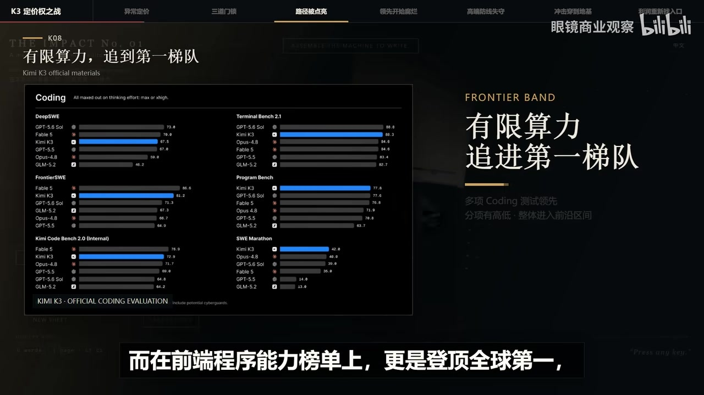
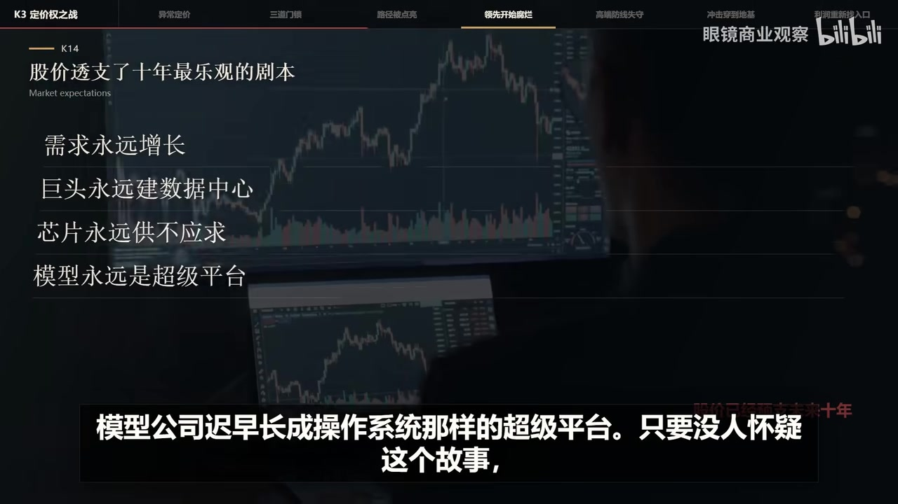
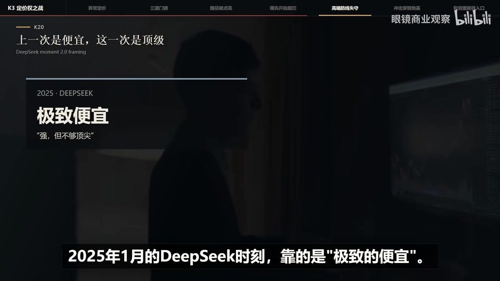
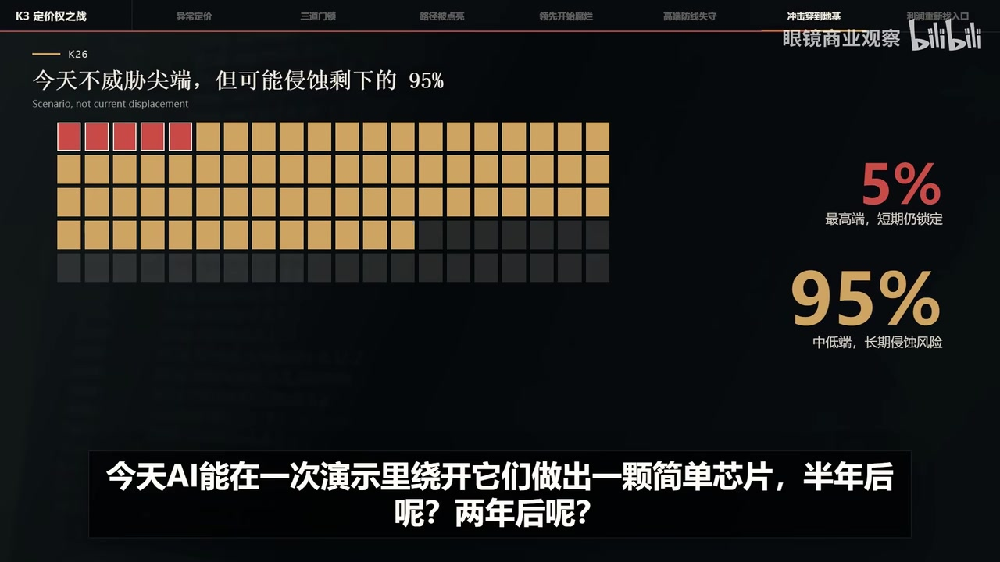

01｜核心判断：被重估的不是 AI，而是“永久稀缺”
视频的结论不是“AI 价值下降”，而是模型智能若更快变便宜、变普及，单凭“最聪明模型”获得长期垄断利润的假设就会失效。
技术信号
资源受限团队仍能逼近第一梯队，说明领先路径正在扩散，后来者不必重复全部昂贵试错。
金融信号
资本关注的不是某次榜单名次，而是领先窗口缩短后，巨额训练与基建投入能否形成可持续回报。
00:00–00:55 视频把前沿闭源模型的高估值解释为“稀缺性溢价”：资金、团队与算力被认为不可复制，于是头部模型拥有强定价权。K3 的冲击在于，它提供了一个反例叙事。

02｜稀缺性神话如何被松动
关键不是复制某家公司代码，而是行业获得“这条路走得通”的存在性证明，从而显著降低方向探索的心理与资本门槛。
01:00–03:00 视频称 K3 通过训练算法与大量工程优化，在较有限的算力条件下进入第一梯队。这里的商业含义是：首创者承担了最贵的方向验证成本，一旦成功路径公开，后续团队可以重组数据、算法与工程方案，减少盲目试错。
这并不等于训练前沿模型变得“容易”，而是进入竞争的可行方案增多。模型能力趋同、开源追赶加快与价格下降三者叠加，会压缩闭源巨头的排他性叙事。
03｜从模型定价权到全产业链估值
市场此前把十年后的乐观情景提前写进股价；K3 被视频视为导火索，把分散的疑问连接成一条完整的回报率压力链。

03:09–04:53 原本的问题是“美国科技公司是否花得太多”，K3 出现后，问题被改写为“花费千亿美元买来的领先能维持多久”。模型更强、更便宜对用户有利，却让模型公司的单位智能利润与领先期限同时承压。

04｜谁最受伤，利润可能流向哪里
| 环节 | 视频给出的压力 | 可能保留的护城河 |
|---|---|---|
| 基础模型公司 | 投入上升、领先缩短、价格持续下降 | 品牌、产品分发、专有数据与企业关系 |
| 芯片与数据中心 | 若资本开支放缓，远期需求曲线被下修 | 推理需求增长、能效与供给能力 |
| 芯片设计工具 | AI 自动化可能侵蚀中低端工作流 | 高端验证、生态锁定与合规可信度 |
| 平台与云 | 模型毛利下降，但仍可聚合需求 | 用户入口、客户绑定和规模化交付 |
| 垂直应用 | 模型可替换性增强 | 行业流程、专有数据与最终客户价值 |
05:08–07:32 视频尤其强调一次芯片设计演示的象征意义：即使当前成果很原始，只要自动化能逐步覆盖大量中低端任务，资本就会提前重估传统工具链的长期收入边界。

视频认为利润最终可能向四类位置集中：拥有大量用户的平台、绑定企业客户的云厂商、掌握工作流与专有数据的垂直应用，以及能显著压低推理成本的新型基础设施。
05｜阅读边界与最终结论
这是一套“从技术信号到资本定价”的解释框架，而不是对单日股价、模型榜单或公司财务的独立事实核验。
证据边界：视频中的指数跌幅、公司市值、模型成本、榜单名次、算法增益与芯片演示均按演讲者叙述整理；部分专名在自动转录中存在同音误差，本文依据画面与上下文做了有限校正，但未额外验证动态市场数据。
07:40–08:37 最终判断是：技术能力的发明者、规模化生产者与利润捕获者未必是同一批主体。智能越便宜、越普及，社会受益越大，但利润越可能从模型本身迁移到用户入口、真实工作流、数据与成本控制能力。
因此，视频真正要表达的不是一次发布会“击败”了哪些公司，而是资本市场开始把 AI 从永久稀缺的超级产品，重新理解为可能快速商品化的基础能力。